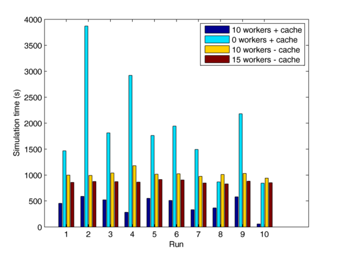

Alex Bikfalvi
A Parallel Computation Library for Discrete Event Simulations
Alex Bikfalvi, Jaime García-Reinoso
Abstract
With the advent of multi-core processors, large scale simulations running on desktop-class systems can benefit from true parallel multitasking as opposed to most common time-sharing multitasking. However, most common simulation software is unsuitable to parallel execution due to the dependency chain between different tasks. When such execution is possible, it is usually available only for small sequences of code and spawning a new process or thread to run it parallel will add a significant overhead. This white paper presents a cross-platform library for parallel execution of simulation tasks based on the well-known concept of worker threads.
On This Page
- Concept Overview
- Worker Threads
- Work Items
- Work Dispatching and Synchronization
- Example
- Performance Benefit
I. Concept Overview
Our library borrows the concept of worker threads, implemented by the kernel of many operating systems, to create a pool of threads that can - when needed - execute work on the simulator's behalf. These worker threads are created before the simulation starts and are available throughout the simulation interval. When certain pieces of simulation code can be executed in parallel, the simulator creates a work item that "describes" the work and adds it to the queue of any worker thread. If the thread is busy executing other code, the new work item gets postponed until the thread becomes available.
Design requirements:
- When there is no work to perform all worker threads are in a wait state (i.e. they don't use any CPU cycles).
- A worker thread resumes execution only when a new work item is added to its queue.
- The main simulation thread that created the work item can wait for the completion of the work item (again, the wait does not consume any CPU cycles).
II. Worker Threads
The simulator can start a number of worker threads at the beginning of the simulation and stop them at the end. The following two classes implement a worker thread and a set of worker threads respectively.
| Class | Description |
|---|---|
| CSimWorker | Cross-platform implementation of one worker thread (Windows API and POSIX threads) |
| CSimWorkers | A set of worker threads. |
For each worker thread, you can specify a worker queue size where new work items can be stored while the thread is busy. For performance reasons, the worker queue has a fixed size for the lifetime of the worker thread. In order to set an adequate value for the queue size that can accommodate your application, keep in mind that every entry in the worker thread queue is only a pointer to a work item. For example, on a 32-bit system a queue size with 1000 entries will use only 4 KB of memory.
III. Work Items
A work item is an object that encapsulates the work to be performed by the worker thread. Because we are using C++, a work item contains the following information:
- The object and the function pointer the worker thread will call to execute the work item.
- Two formal parameters, one for input and one for output.
| Class | Description |
|---|---|
| CSimWorkItem | Base abstract class for a generic work item object. |
| CSimWorkItemImpl | Derived class for a specific work item object for a function with two formal parameters. |
IV. Work Dispatching and Synchronization
After creating and starting a set of worker threads, the simulator can use them as follows:
- Create one or more work items.
- Enqueue the work items to the worker thread or threads. If the simulator uses a set of worker threads (CSimWorkers class), the work items are allocated to the existing worker threads in a round-robin fashion.
- Wait for the work items to complete.
To synchronize shared variables across multiple threads, the simulator can use a mutual exclusion object (i.e. a mutex). When requiring exclusive access to a resource, a thread may lock the mutex. Upon finishing access to the shared resource, the thread will unlock the mutex to make the resource available for other threads. When locking, if the same resource is in use by another thread and the mutex is already locked, the lock function will block the thread until the mutex is unlocked. To test if a shared resource is available or not, a thread can use try lock, which always returns immediately and indicates whether a lock on the mutex has been acquired.
| Class | Description |
|---|---|
| CSimMutex | Class for mutex objects. |
V. Example
The following is an example on how simple it is to use worker threads in a program. The following program uses 10 worker threads to calculate the square of the first 1000 natural numbers and prints each result on the screen.
#include <iostream> #include "SimWorkers.h" #include "SimMutex.h" using namespace std; class Work { private: // Here there may be variables that need to be accessed by the work item CSimMutex mutex; // e.g. a mutex to synchronize access to a shared resource, // in this case writing on the screen public: void WorkItemFunction(int input, int* output) { // First, we calculate the square *output = input * input; // Next, we print on the screen this->mutex.Lock(); // lock the mutex so other thread cannot interrupt while writing cout << input << "^2 = " << *output << endl; // write on the screen this->mutex.Unlock(); // unlock the mutex to allow other threads access to the shared resource } }; int main(int argc, char** argv) { // Create the worker threads CSimWorkers workers( 10, // the number of threads 100 // the thread queue size (we hope for the best, plan for the worst!) ); // Start the worker threads workers.Start(); // Create the object whose function will do the work; Work work; // Create a list of work items CSimWorkItem** workItems = new CSimWorkItem*[1000]; // Create a variable to store the results int output[1000]; // Create the work items for(int index = 0; index < 1000; index++) { workItems[index] = new CSimWorkItemImpl<Work, int, int*>( // this is the template of the work item : object class is Work, // first parameter is int and second parameter is a pointer to int &work, // this is the object whose function will do the work &Work::WorkItemFunction, // this is the function that will be executed by the worker thread index, // this is the first parameter (the input) &output[index] // this is the second parameter (the output) ); // Enqueue the work item to a worker thread workers.Enqueue(workItems[index]); } // We have nothing else to do... let's wait for the work items to complete for(int index = 0; index < 1000; index++) { workItems[index]->Wait(); // And delete the work item delete workItems[index]; } // Delete the list of work items delete[] workItems; // ... "process" the results // Stop the worker threads workers.Stop(); }
The output is (numbers are not in order as the work items execute asynchronously):
Starting simulator worker threads : 0 1 2 3 4 5 6 7 8 9 done! 6^2 = 36 8^2 = 64 3^2 = 9 7^2 = 49 1^2 = 1 5^2 = 25 9^2 = 81 0^2 = 0 2^2 = 4 4^2 = 16 16^2 = 256 18^2 = 324 13^2 = 169 17^2 = 289 11^2 = 121 15^2 = 225 19^2 = 361 10^2 = 100 12^2 = 144 14^2 = 196 26^2 = 676 28^2 = 784 23^2 = 529 27^2 = 729 21^2 = 441 25^2 = 625 29^2 = 841 20^2 = 400 22^2 = 484 24^2 = 576 ...
VI. Performance Benefit
The following figure illustrates the execution time of a discrete event simulation for P2P IPTV streaming. This simulator code is essentially the same with the exception that certain tasks are executed in parallel using 10 worker threads on a 16 core system.

Last updated: March 6, 2011